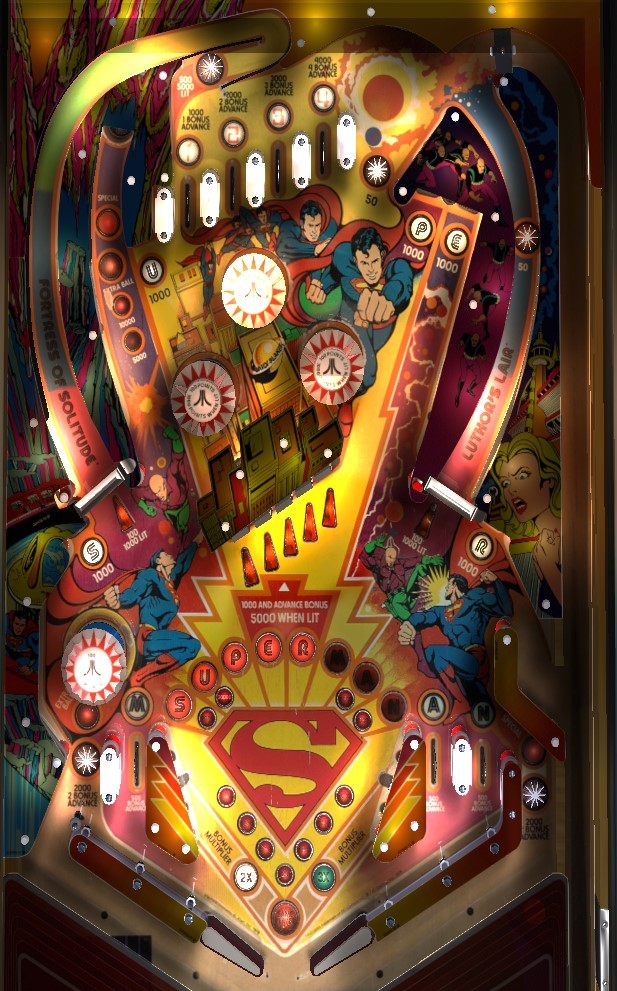

If the ball is on the right flipper, shoot the left spinner. If the ball is on the left flipper: shoot the right spinner if it is lit, and if not, either shoot the center drop targets or transfer the ball to the right flipper for a lit spinner shot. While spelling Superman is valuable, it's difficult and dangerous enough to not be an advised strategy. Top lanes are the easiest way to building end of ball bonus, which is very significant; light 1-2-3 for double bonus, or 1-2-3-4 for triple bonus.
From left to right, the top lanes are numbered 1-2-3-4. Roll through an unlit lane to light it. Whether lit or not, the top lanes score 1,000 points and a bonus advance times the number of the lane, making the rightmost top lane worth 4,000 points and 4 bonus advances. Lighting lanes 1-2-3 awards 2x bonus. Lighting lanes 1-2-3-4 awards 3x bonus. Lit top lanes are preserved from ball to ball, unless you completed 1-2-3-4, in which case they will all be reset for the next ball.
The positioning of the lanes and angle of the plunge mean it takes a very precise power plunge to hit lanes 3 or 4, where 1 and 2 are significantly easier off the plunge or the drop-off from a full spinner shot. If you can consistently plunge the 3 or 4 lane, you're in excellent shape on Superman.
The nest of three pop bumpers start out unlit. When any bumper is hit for the first time on a ball, one bumper will be lit randomly; subsequent bumper hits rotate which one is lit, but there can never be more than one lit at a time. Lit pop bumpers score 1,000 points, while unlit bumpers score 100 points. The lone pop bumper in the lower left is always lit and always scores 100 points.
The spinners start out the game unlit. The first time either slingshot near the flippers is hit during the game, one of the spinners will be lit. Further slingshot hits alternate which spinner is lit. Unlit spinners score 100 points per spin, and lit spinners score 1,000 per spin. The left spinner also briefly lights the star rollover in the very top left of the game for 5,000 points instead of 500, serving as an additional reward for making the long, full left spinner shot. Spinners the most reliable way to repeatble points on Superman.
S-U-P-E-R are collected from white standup targets around the playfield, which all score 1,000 points. M-A-N are collected from the game's three in lanes, which score 500 points and a bonus advance. Make a flashing target or lane to collect that letter and light it solidly. Spelling Super lights the right out lane for Special, which can be worth a free game, an extra ball, 50,000 points, or 60,000 points. Spelling Man lights the left out lane for Extra Ball, which can be set to score 20,000 or 30,000 points instead of an actual extra ball. Spelling Superman in its entirety scores either 30,000 or 50,000 points. Collected letters in Superman are held from ball to ball until Superman is spelled completely, in which case all letters will be reset and their goodies will be able to be collected again at the start of the next turn.
Each drop target down in the center bank scores 1,000 points and a bonus advance. One of the five targets is lit at any given time, rotating every 1 second or so; hit the lit target to score 5,000 points and a bonus advance instead of 1,000.
The upper left saucer starts at a value of 5,000 points on each ball. Completions of the center drop targets increase the saucer value to 10,000 points, then extra ball, then Special. Just like the out lane awards, extra ball can instead give 20,000 or 30,000 points, and special can give a free game, an extra ball, 50,000 points, or 60,000 points. If the saucer is collected for a Special, its value will reset to 5,000 points, but if any other award is collected at the saucer, it will remain at its current level. However, there seems to be a maximum of 1 extra ball per ball in play, with any awards that would give an extra ball being worth 15,000 points if Shoot Again is already lit.
The left out lane is actually a hybrid in/out lane; balls coming down this lane can fall out or be nudged back into play. Balls rolling up the left flipper very quickly can also fall into the out lane due to the lack of a one way gate as a guard. Left out lane scores 2,000 points and 2 bonus advances, and can be lit for extra ball by spelling Man. There is one left in lane, which awards the letter M plus 500 points and a bonus advance. The right side of the table bottom is slightly more conventional, with two in lanes that award the A and N in Man plus 500 points and a bonus advance, and one out lane that scores 2,000 points, 2 bonus advances, and is lit for Special by spelling Super.
Slightly above the right out lane is a small hook shaped wall. This is a completely unmarked free ball lane that redirects the ball back to the shooter lane. You get no points for using this, but you do get the chance to plunge for a top lane again. The free ball lane can be used an infinite number of times.
Bonus is advanced once by the in lanes and drop targets. Bonus is advanced 2 times by the out lanes. Bonus is advanced 1, 2, 3, or 4 times by the 1, 2, 3, and 4 top lanes respectively. Max base bonus is 29,000 points. Lighting the 1-2-3 top lanes awards 2x bonus, and lighting 1-2-3-4 awards 3x bonus. Lit top lanes, and possibly the 2x bonus multiplier, are carried over from ball to ball, unless you complete 1-2-3-4, in which case all lit top lanes and your 3x multiplier are lost when you begin your next turn. There is no way to carry over the base bonus value. With a maximum of 3x 29,000 = 87,000 points, end of ball bonus can be very impactful in overall scoring, especially if the spinners do not spin very well.